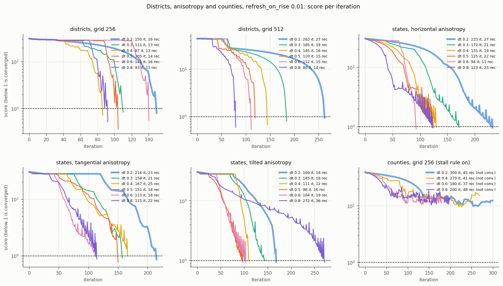
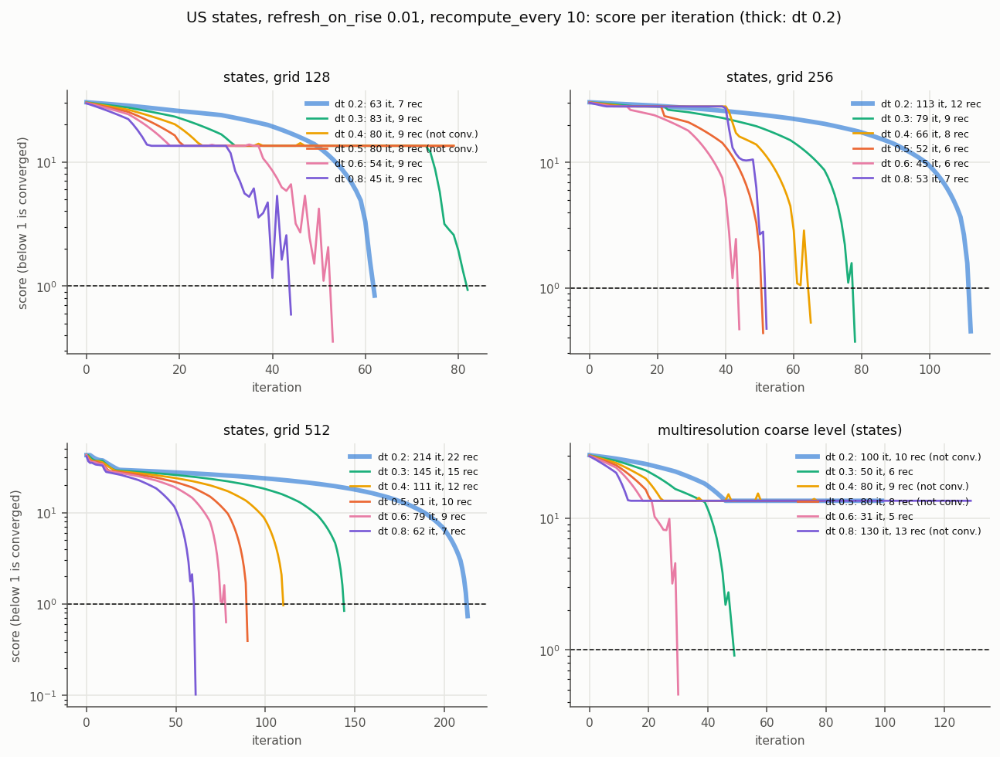
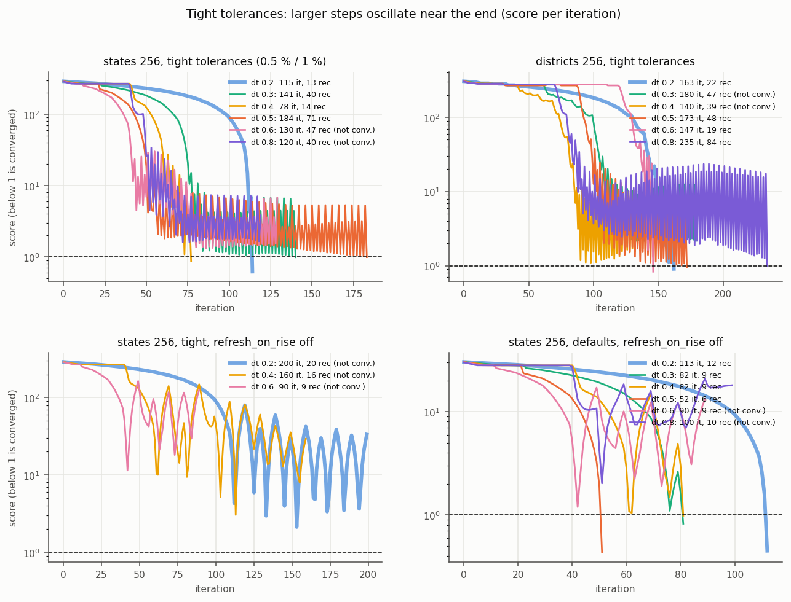
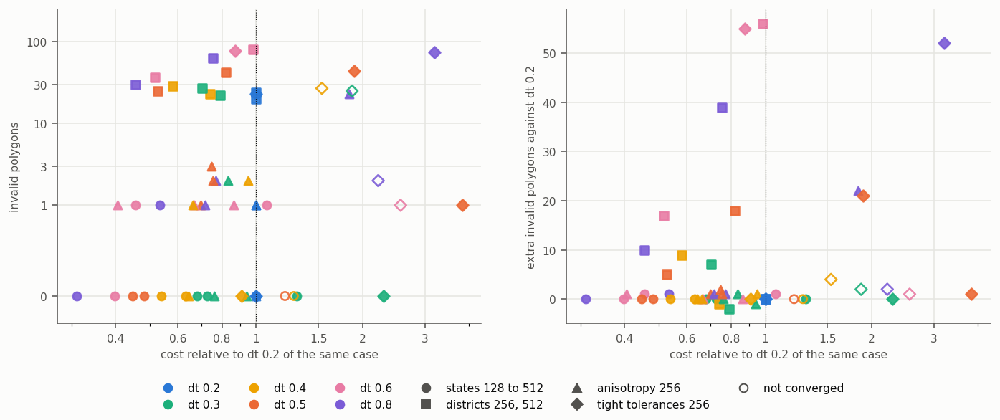
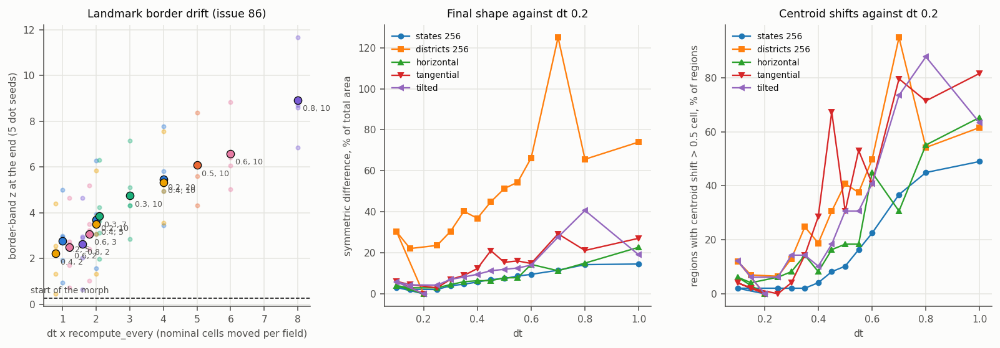
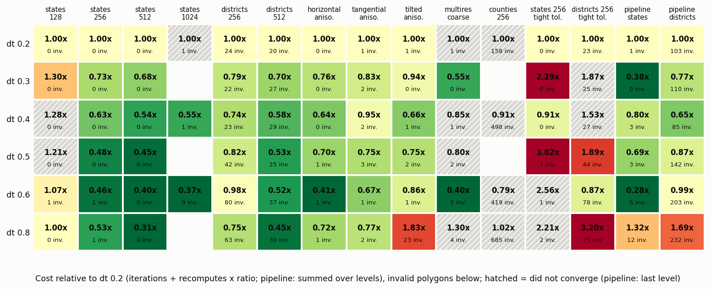

Should the default dt (0.2 cells per iteration for the fastest point) be raised now that refresh-on-rise is the default? At the default tolerances a larger dt cuts the cost by 20 to 40 %, but the gain is irregular, tight tolerances cost 1.5 to 2.7 times more at most dt values above 0.2, invalid polygons on districts grow above 0.4, the landmark border drift grows with dt times recompute_every, and the map changes. The MorphOptions default stays 0.2; preset_balanced (0.3) and preset_high_quality (0.2) are the presets worth changing.
An investigation, not a change. Only dt (and in a few blocks refresh_on_rise, recompute_every, the tolerances and the grid) is swept; the library code is the base commit, plus a scratch commit that edits two preset values. Scripts are in scripts/ (run_all.sh <group> for run_sweep.py, run_extra.sh <pipeline|presets|landmarks|landmarks2> for run_extra.py, shape_compare.py, timing.py, analyze.py; they import the library, so check out the branch); results are in data/*.jsonl (one run per line with the full score trace), data/shape.json, data/timing.json; data/tables.md has every table (about 40, including refresh_on_rise 0.2 and off, the grid 512 and 1024 blocks and the fine dt sweep at 0.1, 0.15, 0.25, 0.35, 0.45, 0.55, 0.7, 1.0). The runs are deterministic, so neighboring dt values act as the replicates: a result that jumps between 0.30, 0.35 and 0.40 is chaotic in dt, not noise.
Metrics: accuracy from the output geometries (linear relative error of area shares, returned best iterate); invalid polygons from shapely.is_valid; cost = iterations + recomputes x ratio (states 9/12/24/71 at grids 128/256/512/1024, districts 18/21/23/47, counties 21/47.5/28.5); reliability C = converged, S = stalled, L = iteration limit. Runs stop at the first score below 1, so the final error is the stopping tolerance.
Cells are iterations / recomputes / cost / invalid polygons and reliability.
| case | dt 0.2 | dt 0.3 | dt 0.4 | dt 0.5 | dt 0.6 | dt 0.8 |
|---|---|---|---|---|---|---|
| states 128 | 63 / 7 / 126 / 0 C | 83 / 9 / 164 / 0 C | 80 / 9 / 161 / 0 S | 80 / 8 / 152 / 0 S | 54 / 9 / 135 / 1 C | 45 / 9 / 126 / 0 C |
| states 256 | 113 / 12 / 257 / 0 C | 79 / 9 / 187 / 0 C | 66 / 8 / 162 / 0 C | 52 / 6 / 124 / 0 C | 45 / 6 / 117 / 1 C | 53 / 7 / 137 / 1 C |
| states 512 | 214 / 22 / 742 / 0 C | 145 / 15 / 505 / 0 C | 111 / 12 / 399 / 0 C | 91 / 10 / 331 / 0 C | 79 / 9 / 295 / 0 C | 62 / 7 / 230 / 0 C |
| states 1024 | 400 / 40 / 3240 / 1 L | - | 214 / 22 / 1776 / 1 C | - | 145 / 15 / 1210 / 0 C | - |
| districts 256 | 150 / 16 / 486 / 24 C | 111 / 13 / 384 / 22 C | 87 / 13 / 360 / 23 C | 105 / 14 / 399 / 42 C | 141 / 16 / 477 / 80 C | 93 / 13 / 366 / 63 C |
| districts 512 | 263 / 27 / 884 / 20 C | 185 / 19 / 622 / 27 C | 145 / 16 / 513 / 29 C | 120 / 15 / 465 / 25 C | 112 / 15 / 457 / 37 C | 80 / 14 / 402 / 30 C |
| horizontal 256 | 233 / 27 / 557 / 0 C | 172 / 21 / 424 / 0 C | 131 / 19 / 359 / 0 C | 125 / 22 / 389 / 1 C | 94 / 11 / 226 / 1 C | 123 / 23 / 399 / 1 C |
| tangential 256 | 216 / 23 / 492 / 1 C | 158 / 21 / 410 / 2 C | 167 / 25 / 467 / 2 C | 151 / 18 / 367 / 3 C | 113 / 18 / 329 / 1 C | 115 / 22 / 379 / 2 C |
| tilted 256 | 169 / 18 / 385 / 1 C | 145 / 18 / 361 / 0 C | 111 / 12 / 255 / 1 C | 98 / 16 / 290 / 2 C | 104 / 19 / 332 / 1 C | 272 / 36 / 704 / 23 C |
| multires coarse (states) | 100 / 10 / 190 / 1 S | 50 / 6 / 104 / 0 C | 80 / 9 / 161 / 1 S | 80 / 8 / 152 / 2 S | 31 / 5 / 76 / 5 C | 130 / 13 / 247 / 4 S |
| counties 256 (best score about 10 for all dt) | 300 / 45 / 2438 / 158 S | - | 270 / 41 / 2218 / 498 S | - | 180 / 37 / 1938 / 419 S | 200 / 48 / 2480 / 685 S |
| case | dt 0.2 | dt 0.3 | dt 0.4 | dt 0.5 | dt 0.6 | dt 0.8 |
|---|---|---|---|---|---|---|
| states 256 | 113 C | 82 C | 82 C | 52 C | 90 S | 100 S |
| districts 256 | 154 C | 113 C | 160 S | 140 S | 190 S | 150 S |
| horizontal 256 | 245 C | 230 S | 147 C | 233 C | 200 S | 213 C |
| tangential 256 | 226 C | 184 C | 312 C | 252 C | 130 S | 211 C |
| tilted 256 | 171 C | 200 S | 113 C | 120 S | 220 S | 170 S |
| multires coarse | 100 S | 100 S | 110 S | 80 S | 80 S | 130 S |
Without refresh-on-rise a dt above 0.2 stalls in 14 of 25 runs on the five grid-256 cases, with it in 0 of 25. Refresh-on-rise is what makes a larger dt usable at all; it does not make it free.
| case | dt 0.2 | dt 0.3 | dt 0.4 | dt 0.5 | dt 0.6 | dt 0.8 |
|---|---|---|---|---|---|---|
| states | 115 / 13 / 271 / 0 C | 141 / 40 / 621 / 0 C | 78 / 14 / 246 / 0 C | 184 / 71 / 1036 / 1 C | 130 / 47 / 694 / 1 S | 120 / 40 / 600 / 2 S |
| districts | 163 / 22 / 625 / 23 C | 180 / 47 / 1167 / 25 S | 140 / 39 / 959 / 27 S | 173 / 48 / 1181 / 44 C | 147 / 19 / 546 / 78 C | 235 / 84 / 1999 / 75 C |
Larger steps overshoot: the score oscillates between about 1 and 5 for dt 0.25 and above (rises below score 20 on states: 1 at 0.2, 32 at 0.3, 65 at 0.5), and the run converges only when a dip crosses 1. The geometric mean cost over the two cases is 1.56 at 0.25, 2.07 at 0.3, 1.18 at 0.4, 2.69 at 0.5, 1.50 at 0.6 and 2.66 at 0.8 times dt 0.2, with one of the two cases stalling at each of 0.25, 0.3, 0.4, 0.6 and 0.8; the pattern is chaotic in dt (exceptions at 0.35 and 0.55). dt 0.15 costs 1.32 and 0.1 costs 1.68 times dt 0.2, so 0.2 is also close to the cheapest value for tight targets.
Symmetric difference as a percentage of the total area, mean vertex shift in cells, and regions whose centroid moves by more than 0.5 cell.
| case | dt 0.15 (control) | dt 0.3 | dt 0.4 | dt 0.5 | dt 0.6 | dt 0.8 |
|---|---|---|---|---|---|---|
| states | 2.2 %, 0.07, 1 of 49 | 3.9 %, 0.16, 1 | 5.7 %, 0.25, 2 | 7.4 %, 0.32, 5 | 9.5 %, 0.44, 11 | 14.2 %, 0.80, 22 |
| districts | 22 %, 0.15, 30 of 432 | 30 %, 0.23, 56 | 37 %, 0.28, 81 | 51 %, 0.45, 176 | 66 %, 0.71, 215 | 66 %, 0.63, 234 |
| horizontal | 2.9 %, 0.10, 2 | 4.5 %, 0.16, 4 | 6.3 %, 0.25, 4 | 7.8 %, 0.31, 9 | 14 %, 0.54, 22 | 15 %, 0.58, 27 |
| tangential | 4.4 %, 0.15, 1 | 7.0 %, 0.27, 2 | 12 %, 0.46, 14 | 15 %, 0.66, 15 | 15 %, 0.61, 20 | 21 %, 0.96, 35 |
| tilted | 4.3 %, 0.14, 3 | 7.0 %, 0.25, 7 | 9.5 %, 0.36, 5 | 12 %, 0.46, 15 | 14 %, 0.52, 20 | 41 %, 1.98, 43 |
The map depends on dt because the stopping point and the flow path do. At dt 0.3 the shape is 1.4 to 1.8 times the dt 0.15 control; from 0.5 up a larger dt is not just a faster path to the same map.
morph_multiresolution, min_resolution 128, 3 levels, n_iter 300 per level, refresh_on_rise 0.01)| case | dt | iterations | cost | levels (grid, status, iterations) | mean % | max % | invalid |
|---|---|---|---|---|---|---|---|
| states | 0.2 | 134 | 272 | 128 S 100, 256 C 34 | 0.23 | 5.6 | 1 |
| states | 0.3 | 50 | 104 | 128 C 50 | 0.97 | 9.0 | 0 |
| states | 0.4 | 101 | 218 | 128 S 80, 256 C 21 | 0.42 | 3.4 | 3 |
| states | 0.6 | 31 | 76 | 128 C 31 | 1.23 | 4.3 | 5 |
| states | 0.8 | 170 | 359 | 128 S 130, 256 C 40 | 1.38 | 6.3 | 12 |
| districts | 0.2 | 231 | 879 | 128 C 231 | 0.15 | 8.7 | 103 |
| districts | 0.4 | 178 | 571 | 128 S 150, 256 C 28 | 0.25 | 4.8 | 85 |
| districts | 0.6 | 233 | 866 | 128 S 210, 256 C 23 | 0.35 | 6.4 | 203 |
| districts | 0.8 | 282 | 1482 | 128 S 150, 256 C 132 | 0.50 | 8.9 | 232 |
The coarse-level plateau is not removed reliably by a larger dt: it converges at 0.3 and 0.6 and not at 0.2, 0.4, 0.5, 0.8. The pipeline gain is partly a different stopping level: when the 128 level converges (states at 0.3 and 0.6), the refinement levels are skipped and the returned map is the coarse one, with higher error (mean 1.0 to 1.2 % against 0.23 %).
| case | (0.2, 10) | (0.2, 5) | (0.2, 20) | (0.4, 5) | (0.4, 10) | (0.4, 20) | (0.6, 5) | (0.6, 10) | (0.6, 20) |
|---|---|---|---|---|---|---|---|---|---|
| states | 257 | 372 | 209 | 214 | 162 | 192 | 148 | 117 | 214 |
| districts | 486 | 724 | 458 | 410 | 360 | 417 | 330 | 477 | 776 |
| horizontal | 557 | 692 | 541 | 414 | 359 | 645 | 337 | 226 | 315 |
| tangential | 492 | 660 | 717 | 370 | 467 | 411 | 302 | 329 | 884 |
| tilted | 385 | 543 | 383 | 300 | 255 | 313 | 305 | 332 | 469 |
dt matters more than recompute_every: at fixed dt 0.4 and 0.6, 10 is the cheapest or within 10 % of the cheapest in 8 of 10 case/dt pairs. At equal nominal displacement per field, (0.4, 5) is cheaper than (0.2, 10) in all five cases (0.74 to 0.84 times).
Border-band z at the end of the morph, mean of 5 dot seeds (7 to 11), preset_balanced, area_scale 1e-6:
| dt, recompute_every (product) | iterations | z |
|---|---|---|
| 0.2, 1 (0.2) | 106 | 2.31 |
| 0.4, 2 (0.8) | 54 | 2.22 |
| 0.2, 5 (1.0) | 108 | 2.76 |
| 0.6, 3 (1.8) | 37 | 3.07 |
| 0.2, 10 (2.0, current) | 113 | 3.69 |
| 0.4, 5 (2.0) | 58 | 3.51 |
| 0.3, 7 (2.1) | 76 | 3.86 |
| 0.3, 10 (3.0) | 79 | 4.75 |
| 0.4, 10 (4.0) | 66 | 5.33 |
| 0.2, 20 (4.0) | 125 | 5.47 |
| 0.6, 10 (6.0) | 45 | 6.59 |
| 0.8, 10 (8.0) | 53 | 8.92 |
The border drift is set by the product dt x recompute_every (the distance moved with one stale field), not by dt alone: pairs with the same product give the same z. Larger steps do not fix the issue; they worsen it at a fixed recompute_every. All dots stay inside their own state (99.9 %) at every dt.
snapshot_every=1 the frame count equals the iterations: 113, 79, 66, 52, 45, 53 for dt 0.2, 0.3, 0.4, 0.5, 0.6, 0.8. The largest vertex displacement between iterations is 1.0 to 1.05 dt cells (0.20 cell at 0.2, 0.84 at 0.8; at most 0.7 % of the map extent), so frame-to-frame jumps stay below one cell at every dt tested.| preset | grid, n_iter, tolerances | current dt | effect of a different dt |
|---|---|---|---|
| preset_fast | 128, 30, 0.15 / 0.25 | 0.3 | does not converge in 30 iterations at any dt tested; n_iter, not dt, limits it |
| preset_balanced | 256, 100, 0.05 / 0.1 | 0.2 | states: dt 0.2 does not converge in 100 iterations (needs 113); dt 0.3, 0.4, 0.6 converge in 79, 66, 45. Districts: 0.2 and 0.3 do not converge in 100 (need 150 and 111), 0.4 does (87) |
| preset_high_quality | 512, 300, 0.01 / 0.03 | 0.1 | states: dt 0.1 does not converge in 300 iterations; 0.2, 0.3, 0.4 converge in 215, 146, 112. Districts: 0.1 does not, 0.2, 0.3, 0.4 converge in 268, 188, 152 |
A new MorphOptions default would not change the presets, because each sets dt explicitly.
MorphOptions.dt stays 0.2. With refresh-on-rise a larger constant dt converges almost everywhere, and at the default tolerances it saves about 20 % at dt 0.3 and 25 to 40 % at 0.4 to 0.6. But the gain is irregular, tight tolerances cost more at most dt values from 0.25 up, districts have 42 and 80 invalid polygons at 0.5 and 0.6 against 24, the landmark border drift grows (z 3.7 at 0.2 to 4.8 at 0.3 and 5.3 at 0.4 with recompute_every 10), and from dt 0.5 up the final map is a visibly different shape. A 20 % saving is within the spread between neighboring dt values.preset_balanced to dt 0.3 and preset_high_quality to dt 0.2 (scratch commit a4f0aea). They remove two real failures: balanced does not finish states in its 100 iterations at 0.2 and does at 0.3 (79); high quality at 0.1 does not finish in 300 iterations at grid 512. Districts under balanced still need n_iter, and preset_fast needs n_iter at any dt.docs/explanations/flow-cartogram-algorithm.md lists dt with a default of 1.0 (line 187) while the code default is 0.2; not touched here.
Districts at 256 and 512, the three anisotropy runs and counties. Counties never leave a score of about 10.

Score per iteration (log, dashed line at 1), one color per dt, states at grids 128, 256, 512 and the multiresolution coarse level.

Tight tolerances (0.5 % / 1 %) on states and districts, and refresh_on_rise off. Above dt 0.2 the score ends in a limit cycle between about 1 and 5 that crosses 1 only by chance.

Cost relative to dt 0.2 against invalid polygons, one point per run; open markers did not converge.

Left: border-band z of the issue 86 repro against dt x recompute_every. Middle and right: symmetric difference and centroid shifts of the final shape against the dt 0.2 shape.

Rows dt, columns cases; cell = cost relative to dt 0.2, invalid polygons below, hatched = not converged.